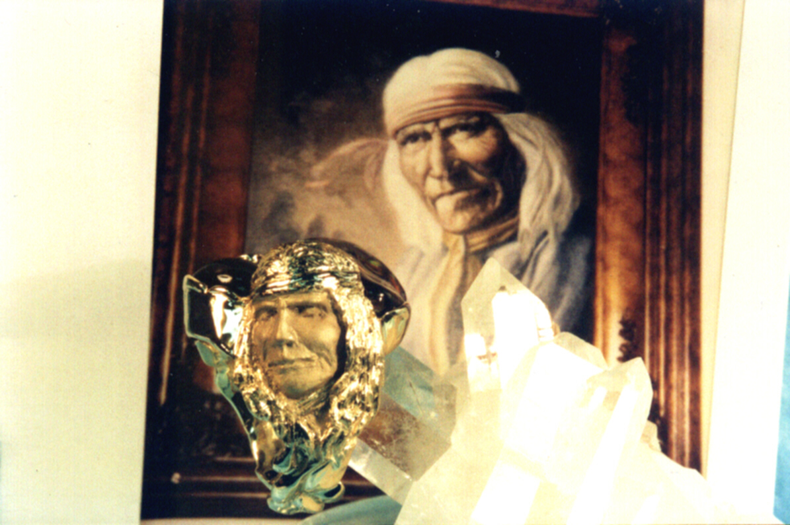
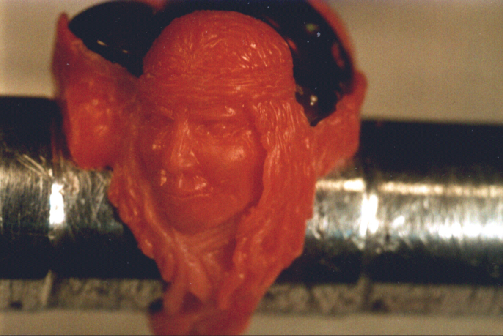
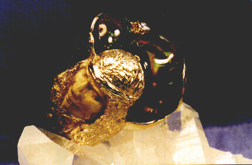
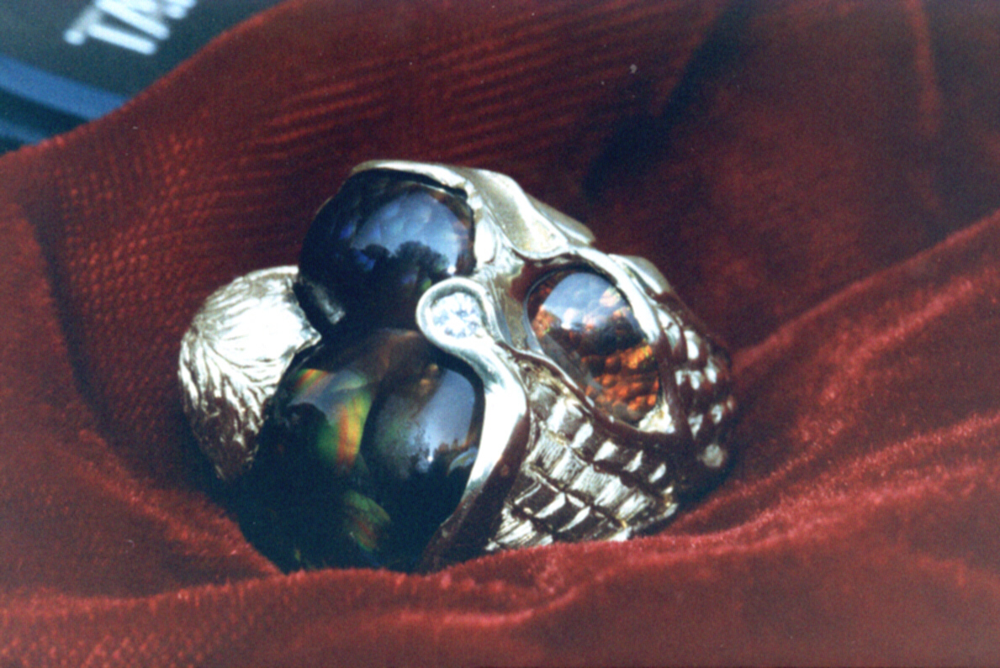
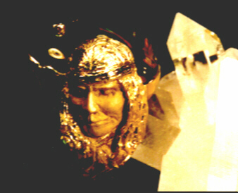

- home - Designs by Elias - Art -
~
The Old Wise One
The gentleman asked if I would assist in commemorating one of his friends, a Native American artist who had lived and worked in Arizona and who had recently died. The gentleman had met this lady artist when she was alive, and he had bought a painting from her. The painting was an oil on canvass. The subject was a portrait of an old Native American. The artist had christened that painting "The Old Wise One". The gentleman and his wife had come to love that painting as well as they loved the artist who created it. The painting was hung in their bedroom, above their bed. When the lady friend and artist died, the gentleman felt a desire to preserve her memory in gold, as a way to immortalize her, and when he came to my studio in Georgia he brought with him a Polaroid photograph he had taken of the painting. He asked if I could create in gold, on the side of a finger ring, a duplication of that Old Wise One depicted in the painting on the photograph. I offered that I could create my interpretation of that Old Wise One. The gentleman then produced a collection of Arizona fire agates and asked me to incorporate some of those stones into the design for the finger ring. Below are some photographs of the finished work. As I often did in the 1990s when photographing my work, I mounted the finger ring on a cluster of quartz crystals.
The first picture below is of the finished ring with the client's Polaroid picture of the painting placed behind the ring.

The wax model was built one drop of wax at a time, was carved and textured around the three Arizona Fire Agates and the single round diamond. I did not keep count of the hours involved in the design's creation. Sensing the importance of this design to the gentleman who commissioned the work, I gave every consideration to the work. The project spanned more than two months, during which time I also fulfilled our store's demands and the needs of our many other customers. The hours which went into the making of this finger ring were taken from my personal time, my "free time", so that normal business pressures would not unconsciously creep into the evolving design as I added one drop of wax after another to arrive at the completed design.

The finger ring is in 18 Karat yellow gold and weighs two and one/half ounces Troy. It wears very comfortably. The gentleman and I attended the Tucson Gem and Mineral show the year this finger ring was created, and he allowed me to wear it several times during our week at that gem show. We both agreed that this was a "show piece".

In the view below we can see the three Arizona Fire Agates. The smaller, red one is tucked into the lower shoulder of the finger ring and is surrounded by my quilted and brushed texture. The two abutted center-stones appear on top of the finger when the ring is worn, and they are nestled between the top of the Old Wise One's head and the lone diamond.

A different angle and different light....

~
This finger ring is in a private collection. The owner of this finger ring and his family also own four additional designs, some of which you'll see in this portfolio collection.
~
- home - Designs by Elias - Art -
~